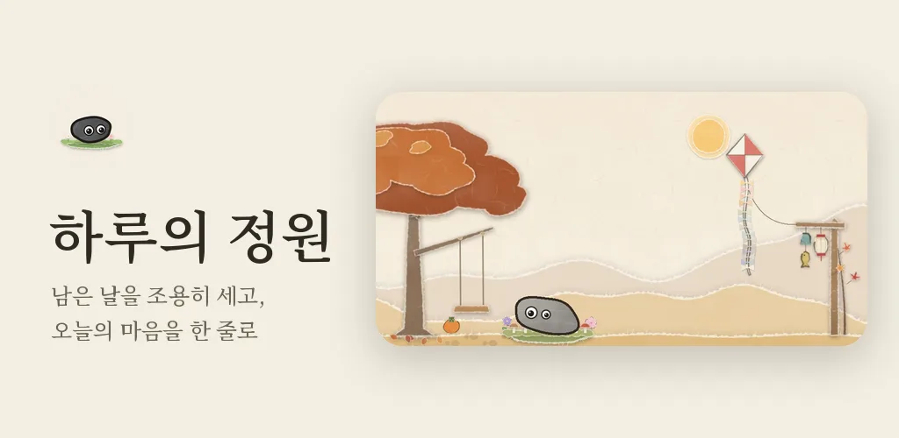
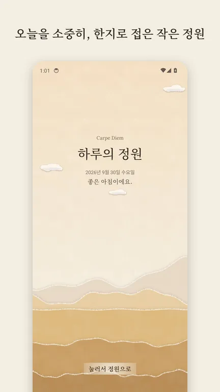
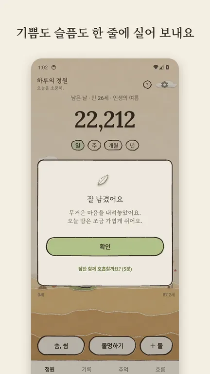
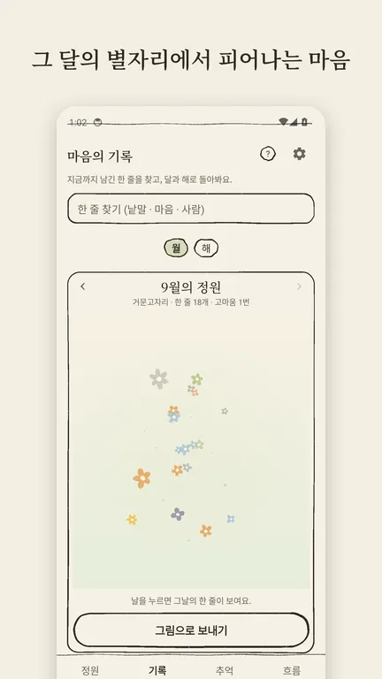
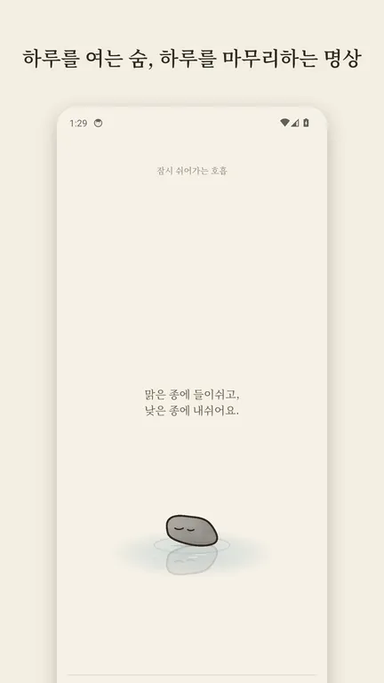
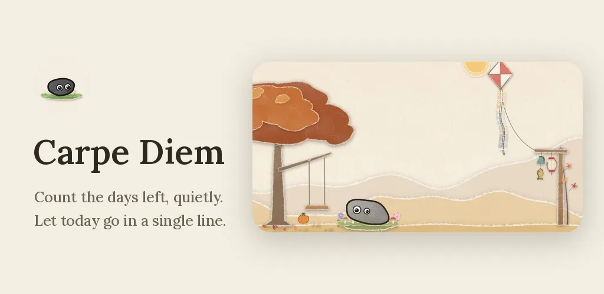
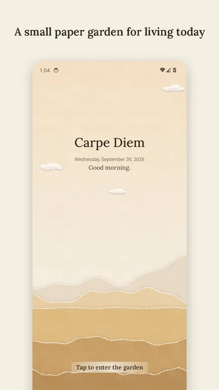
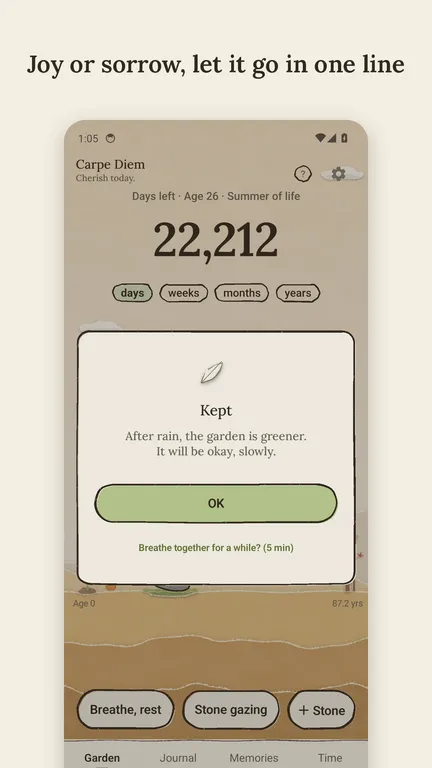
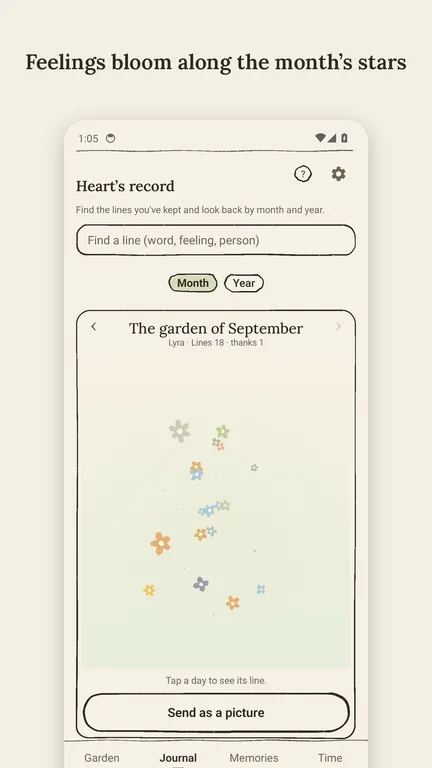
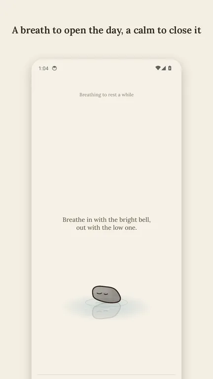

하루의 정원
남은 날을 세는 인생 달력, 하루 한 줄 일기와 감정 기록, 명상 호흡을 담은 작은 한지 정원. 모든 기록은 여기에만 머물러요.




세상에 하나뿐인 돌, 하루
처음 열면 나만의 조약돌 ‘하루’를 만나요. 하루는 인생의 길 위, 지금 내가 있는 자리에 앉아 있어요. 쓰다듬으면 웃고, 가족 · 반려동물의 돌과 나란히 앉아요.
남은 시간과 인생 달력
기대수명까지 남은 시간을 일 · 주 · 개월 · 년으로. 인생 전체를 작은 조약돌 달력으로 한눈에 봐요.
한지로 접은 정원, 진짜 하늘
나무 · 말뚝 · 연이 함께한 날만큼 자라요. 고른 나라의 실제 해 뜨고 지는 시각을 따라 노을 · 어스름 · 새벽이 지나가고, 달은 그날 밤 모양 그대로 떠요. 스물넷 절기와 열두 별자리가 정원에 조용히 모여요.
오늘의 한 줄 (한 줄 일기 · 감정 기록)
기쁨 · 행복부터 아쉬움, 걱정 · 슬픔까지 열세 가지 마음 가운데 하나를 고르고 오늘을 한 줄로 적어요. 오늘의 질문에 답해도 좋아요. 보낸 마음은 ‘마음의 기록’에 낮엔 꽃, 밤엔 별로 놓이고, 계절마다 편지로 돌아와요. 미래의 나에게 쓴 한마디는 정한 날에 다시 받고, 밤엔 ‘하루 닫기’ 1분 (한 줄 · 고마움 한 가지 · 등불) 으로 하루를 마무리해요.
숨, 쉼 · 돌멍하기 (명상 · 호흡 · 수면)
공명 호흡 · 상자 호흡 · 4-7-8 호흡 · 한숨 호흡. 숨이 곧 소리가 되어 따라가기만 하면 되고, 마친 숨은 그날 정원에 발자국 · 꽃 · 따뜻한 등빛으로 남아요. 돌멍하기에선 구름 · 연못 · 화톳불과 계절의 소리를 오래 바라보고, 잠들기 타이머가 소리를 서서히 줄여 줘요.
천천히 모이는 것들
계절 조각 · 손님과 순간 · 별자리 열둘 · 절기 스물넷이 조금씩 모여요. 모은 조각은 하루나 가족의 돌 곁에 하나씩 두고, 12월 마지막 주엔 한 해를 한 장으로 돌아봐요.
곁에 있는 사람들
가족의 생일엔 카드 한 장, 돌 곁엔 계절의 조각 하나. 곁을 떠난 가족은 기억의 돌로, 하늘의 작은 별로 남아요.
홈 화면에서도
위젯 ‘정원’ (4×2) 은 남은 시간과 오늘의 문장, 하늘 · 해와 달 · 계절을 따라 바뀌는 내 정원. 위젯 ‘하루’ (2×2) 는 때를 따라 지내는 내 하루예요. 아이콘을 길게 누르면 한 줄 · 숨 · 돌멍하기 · 하루 닫기로 바로, 빠른 설정엔 ‘숨, 쉼’ · ‘돌멍하기’ 타일.
조용한 앱
계정도, 광고도, 서버도 없어요. 쓰신 기록은 폰 안에만 있고, 백업 파일로 직접 옮길 수 있어요.
응원하기
잠긴 기능은 없어요. 마음에 들었다면 따뜻한 한 잔으로 응원해 주세요. 한 번만 결제되고, 구독은 없어요. 응원한 것은 하루 곁에 작은 조각으로 놓여요.
- 차 한 잔1,500원
- 커피 한 잔4,400원
- 케이크 한 조각9,800원
결제는 Google Play 가 처리하며, 개발자는 결제 정보를 받지 않아요.
출처
- 기대수명: UN World Population Prospects 2024 (2023년, 중위 추계)
- 글꼴: Noto Serif KR · JP · TC, Lora (SIL Open Font License 1.1)
- 오늘의 문장: 널리 알려진 명언. 작가가 잘못 알려진 경우가 많아 앱에는 작가를 적지 않아요.
- 그림 · 소리: 한지 그림과 소리는 모두 직접 만들었어요. 소리는 파일 없이 앱이 그때그때 만들어요.

Carpe Diem
A life calendar, a one-line-a-day mood journal and breathing meditation, in a small paper garden that quietly counts the days you have left. Everything stays here.




Haru, a stone like no other
Meet your own pebble, Haru. It sits on the path of your life, right where you are now, with the stones of your family and pets beside it.
Time left and a life calendar
Days, weeks, months or years left, and your whole life as a small calendar of pebbles.
A hanji garden under the real sky
A tree, a post and a kite grow with the days. Sunset, dusk and dawn follow the real sunrise and sunset of your country, and the moon rises in that night's shape. Solar terms and constellations gather quietly in the garden.
Today's line: a one-line mood journal
Pick one of thirteen feelings, from joy and happiness to wistful, worried and sad, and write today in a single line, or answer today's question. It settles as a flower by day and a star by night, and comes back each season as a letter. Write to your future self and get it back on the day you choose, and close the day at night in one minute: a line, one thing you are grateful for, a lantern.
Breathe and gaze: meditation and sleep
Resonance, box, 4-7-8 and cyclic-sigh breathing, where the breath becomes the sound; each finished breath leaves footprints, flowers or a warmer lantern in the garden. Or gaze at clouds, a pond or a small fire with the sounds of the season, and let the sleep timer fade it out.
Things that gather slowly
Seasonal pieces, visitors and moments, 12 constellations and 24 solar terms. Place a piece beside Haru or a family stone, and in the last week of December the whole year fits on one page.
On your home screen
A Garden widget (4×2) with time left and today's words in your garden as the sky, sun, moon and seasons change, and a Haru widget (2×2). Hold the app icon to write, breathe, gaze or close the day; quick settings tiles for Breathe and Stone gazing.
A quiet app
No account, no ads, no server. What you write stays on your phone, and you can move it yourself with a backup file.
Support
Nothing is locked. If you like the garden, buy the maker a cup of tea, a coffee or a slice of cake. One-time payments, no subscription; each leaves a small piece beside Haru. Payments are handled by Google Play, and the developer never receives payment details.
Credits
- Life expectancy: UN World Population Prospects 2024 (2023, medium variant)
- Fonts: Noto Serif KR · JP · TC and Lora (SIL Open Font License 1.1)
- Daily words: well-known quotes, shown without authors because many are misattributed.
- Pictures and sounds: all hanji art and sounds are original; sounds are made live by the app, with no audio files.